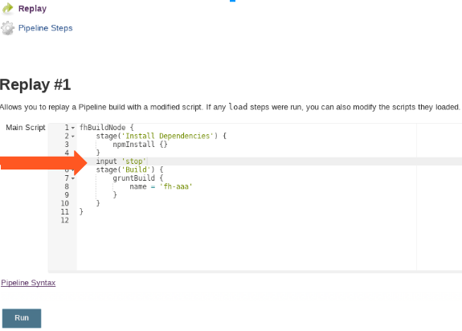

Few notes on debugging a Jenkinsfile
For past few months I have been using Jenkinsfiles and Jenkins pipelines more and more. They have many advantages to our previous setup, that over-relied on storing as much as possible in jenkins-job-builder yaml configs and chaining builds together with post-build triggers.
With jenkins-files, we can use Groovy to script everything and that is much nicer than the combination of bash and yaml. You can do code-sharing with pipeline-libraries. And all of this really nicely integrates with Github, so we now roll our own travis-like ci in our own infrastructure.
On the other hand, if there is a problem, especially in longer running pipeline, it can be quite painful to debug.
Stage one: thorough debug logs
If the problem that I encounter is simple enough, it might be solved just by adding a few print statements here and there, and re-running the job. This usually works as long as the run is shorter than ~5 minutes. In my case, around the 5 minute mark, the "Read logs"-"Change code"-"Rerun" cycle starts being unbearably slow.
Stage two: improvising a break-point
In our infrastructure, we are using docker slaves for most things. On one hand, this means that job usually run in clean environment. Unfortunately, this also means that if something goes wrong, before I start investigating, the container my job was running on is long gone.
One trick that usually helped me here, was adding an "input" prompt into my jenkins file in the place I want to investigate. This way I was able to pause the execution of the pipeline, ssh into the container and investigate further.

Doing a naive ssh into the container can lead to one more problem. The running job often changes the environment for the commands it would run, which means that the external connection wouldn't have access to the same environmental variables, e.t.c.
To mitigate this, I first try to start a tmux session in the jenkins job. Then I attach inside of it.
Stage three: improvising a repl
Sometimes I would need to investigate reason for failure of a pipeline-command itself. In this case I would create a weird little repl-like environment:
while (true) {
def cmd = input message: 'What to run:', parameters: [string(defaultValue: '', description: '', name: 'cmd')]
try {
print Eval.x(this,cmd)
} catch (e) {
print e
}
}
You can then input code to execute in this case, something like:
x.binding.steps.invokeMethod("sh","node --version")
The nice thing about this is, that now I have limitted access to the rest of the jenkins machinery, while in shell I'd only have access to shell commands. On the other hand, it is really crude. Especially passing in other variables is tricky, and it is even harder to save the results of execution anywhere else. As you can see, I had to use the dsl object methods directly, instead of writing in the same style as in the Jenkinsfile.
To conclude, debugging Jenkinsfiles is ugly
In the future I will probably invest more into the testing side of our pipelines. I know there is a unit-testing library. I should make sure that thing I actually run in the pipelines is reproducible more easily on my machine as well.
On the other hand, I could invest a significant ammount of time to develop a true Jenkinsfile repl. Unfortunately it seems that ain't nobody got time for that. But I would be quite interested in other solutions to this problem.
Comments